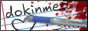
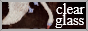
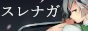

Getting Started With Decentralizing
webhosting
- github pages: solid free host for static websites. what i use.
- neocities: free webhosting service. updates using the online editor. an okay gateway for those coming from SNS wanting to learn how to code HTML/CSS through the small community that comes with it.
- mediafire: private and public file-sharing.
- catbox.moe: online storage.
- webring list: alternatively web rings are a group of websites centered around one theme and while its kind of a primitive format with caveats, its the best way to find niche sites in ways you can't with a search engine.
lifestyle sustainability
- low-tech magazine
- collapse OS
- how to ask questions the smart way
visual tools
- recovered csp brushes: one time i deleted all my clip data, and i was able to recover all of my brushes through here.
- 100 things every designer needs to know about people: good for those trying to create easy-to-read UI, bad for those who are fascinated with the old web aesthetic. in the latter case ignore this book.
- bitmapflow: generate inbetweens for pixel sprites.
- moebius ANSI art editor
linux resources
- arch linux bsdtar fix: script to fix the bsdtar error during partition setup.
- offline installation for arch
Things I Find Interesting
- cutie nevada: a horribly outdated parody of the cutie honey intro song in tribute to nevada tan.
- five-hundred million years for one million yen button: would you press the button?
- イルカの夢でさようなら: click the girl to kill her.
- ikigusare idols
Friends Of The Site

vietnamese moe artist and one of my closer online friends. we've met through each other's tadc fanart. .gif "imiya.lol")
chatroom friend i respect a lot. we met through sharing love for a ship and similar tastes for edm. neocities mutual. sense of volume and form is excellent; ultimately an artist i respect. australian neocities mutual. truest vkei + j-core blogger out there. 
j-fashion neocities mutual who doesn't play about uniforms. fellow artist. way cooler than me. 
egl neocities mutual. most based clothing opinions. 
"otaku" neocities mutual. one of few blogs i keep up with.